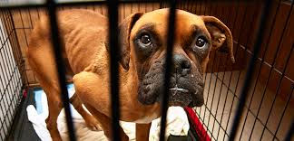
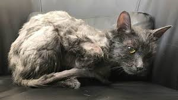
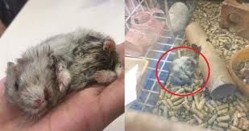

Dogs Suffering
There are many dogs are abused in this society. Also, many dogs have been suffering in horrible terrible conditions. Many people don't take care of them like they suppose to. Also, many people can't afford to take care of them because they don't have enough to take care of them. By the way, our job is free. So people don't have to pay for one of the pets that they get received. Even the discount is free. We are going to try to do our best to rescue as many dogs as we can that are chained up and living in many horrible conditions.
- Pet Food
Starvation
Also, there are many pets are dying from starvation. They are dying from starvation because some of them have angry owners who treat them cruel and hatreness. Actually, there are most pets are treated wrost by people keeping them on a chain, left in cars, and other kinds of cruelness behaviors that most people have concerning animals. Many people need to understand that they need to feed their animals two times a day. There are many pets not getting good treatment. We will offer free pet food, treats, and dental treats in order to keep them in an healthy environment. Actually, many pets need food in order for them to stay alive and become more healthy.
- Wounded
- Pain
- Animal Hospital
Injured Pets
In this society, there are many injured animals that's been beaten, wounded, and burned. There are many cruel people out in this society. Many pets are dying by this kind of abuse that many people committed. We offer an Animal Medical Clinic for all pets that are injured and need help. So we offer free medical supplies for pets that need extra treatment care. Also, this animal hospital will help all of the pets to get well and live an relaxing and loving life.
- Techniques
- Benefits
- Goals
- Animal Abuse
- Animal abuse is an terrible problem. This is a terrible problem because it affect this society with cruelness behavior. There are many pets in this society is being treated worst. There are some people have mental abuse problems by treating pets by not taking care of them like they suppose to. Also, many people are not taking them to veternarians to get them checked out. Also, some people don't care for pets. They don't care for them because some of them don't have enough money to afford to take care of them. So, some people turn their pets out into the wilderness. Also, there are some people abuse animals really bad by making them fight, beaten, and wounded. Our job is to rescue stray pets and wounded pets and provide them a good shelter and a warm cozy place to stay in and relax and feel joyable.
- Neglected
- Many animals have been neglected in an horrible environment. Also, many animals feel neglected because of the environment they are living in. Our company offer animals to get better treatment and care. Actually, we offer more food and water for them. We offer free items for people to take extra care of them and provide them with food and shelter.
- Mission
- Our mission is to save every pet life and provide them with extra health and care for them. Also, we going to rescue all of the animals that had been living in horrible and terrible conditions. Actually, there are many animals are not getting the extra care and treatment like they suppose to. Actually, our mission is to save all of the pet and provide them an great loving home for them to stay in and feel more relaxable.
Main Important Goals
Our main important goals is to rescue all animals that's been negelected and abuse. There are many pets out in this society are looking for great homes to feel more and more comfortable. Also, there are some pets are abused by many cruel people. As for that, there are many animals are suffering in many terrible and horrible conditions. There are alot of pets are looking for great homes to attend and so where they can get as much love and attention. This is our important goal because we know that there are many pets are suffering out in this society.
If you see an pet that is living in terrible and horrible condition, for more information about rescuing a pet, visit petrescue.gov.